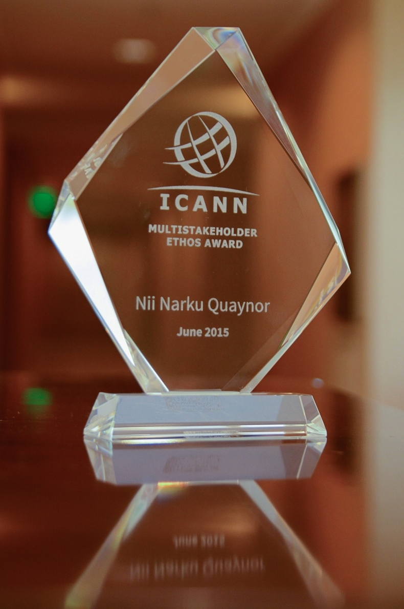

Awards

Nii Quaynor graduated from Dartmouth College in 1972 with B.A (Engineering Science) and received a Ph.D
(Computer Science) in distributed systems in 1977 from S.U.N.Y at Stony Brook.
Nii worked with DEC, U.S.A from 1977 till 1992 and returned to Ghana to establish the first ISP operated by
Network Computer Systems in 1993.
Nii had earlier in 1977 established the Computer Science department at the University of Cape Coast, Ghana.
Nii is the Convener of AfNOG, a network technology transfer institution since 2000 and founding Chairman of
AFRINIC, the African numbers registry.
Nii taught microprocessors with International Center for Theoretical Physics in several developing countries.
Nii served on several Boards including ICANN, UN ICT Task Force, IGF-MAG, NITA-Ghana.
He is a member of GhiPPS and NIA Boards, Patron – ISOC Ghana Chapter, Chairman, ICANN Strategy Panel,
Public Responsibility.
Nii remains the Chairman of GDC and a Professor of Computer Science at University of Cape-Coast, Ghana.
Nii received the Internet Society's prestigious Jonathan Postel Service Award for pioneering work to
advance Internet in Africa, December 2007. He was also inducted into the Internet Hall of Fame in June
2015 for his pioneering role in the development of the Internet in Africa.